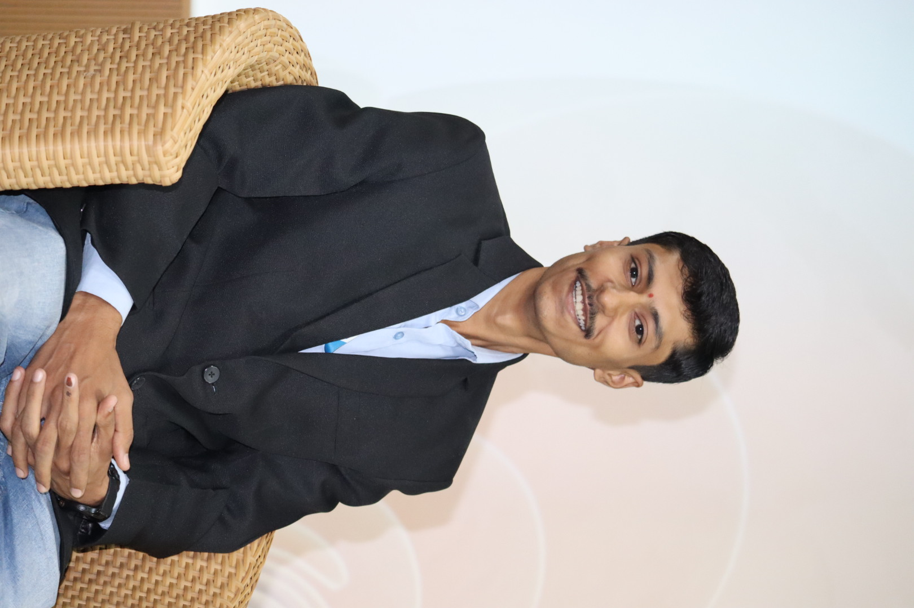
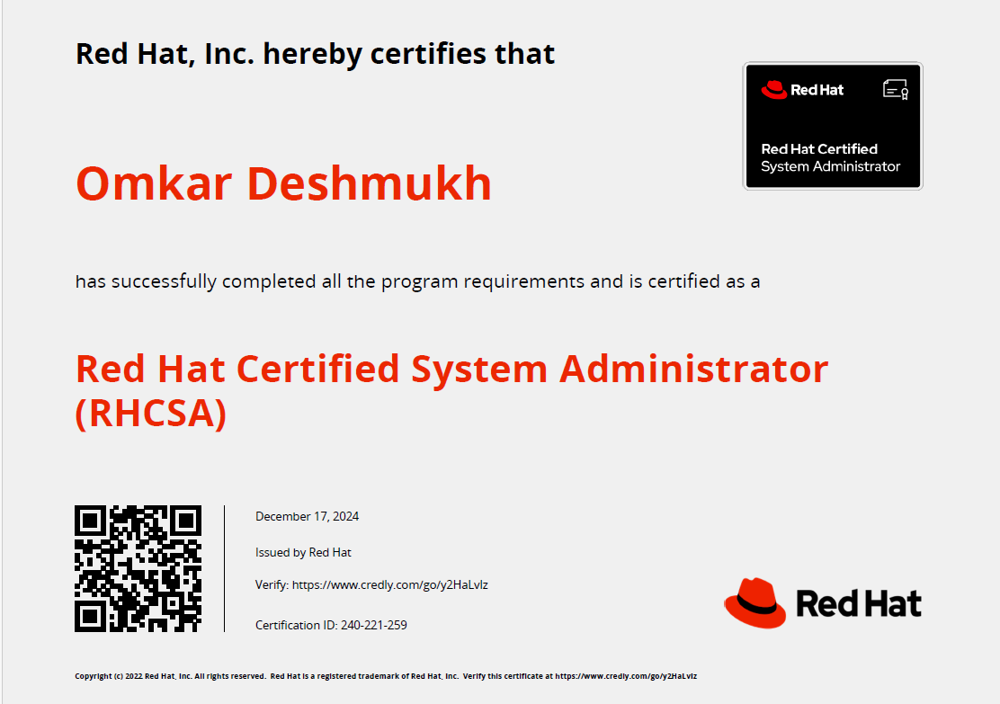
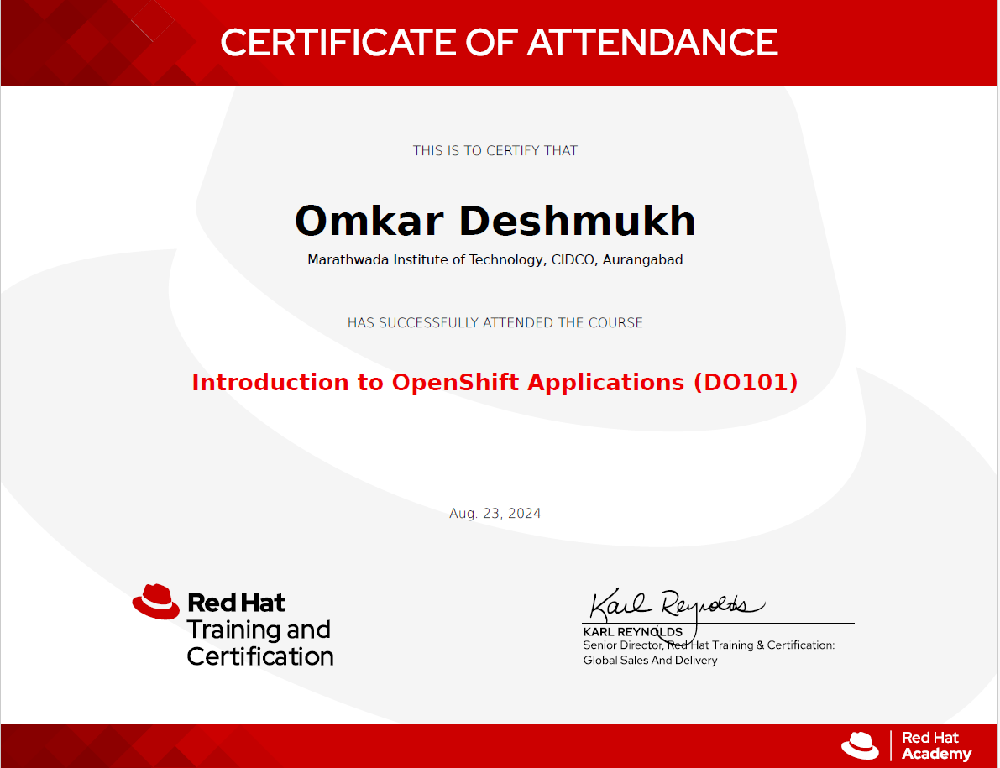

Building scalable cloud infrastructure and solving production issues
View ExperienceEmsphere | Oct 2025 – Present
Intern – Java Web Development

RHCSA – Red Hat Certified System Administrator

Introduction to OpenShift Applications
Hello! I'm Omkar Deshmukh, an aspiring DevOps Engineer with a strong passion for cloud technologies and automation.
I have hands-on experience with tools like Linux, AWS, Docker, Kubernetes, and Jenkins. My focus is on building scalable infrastructure, automating deployments, and implementing CI/CD pipelines.
I enjoy solving real-world infrastructure challenges and continuously learning new DevOps tools and cloud technologies. My goal is to contribute to high-performing engineering teams and build reliable, automated systems.
Email: deshmukhomkar73@gmail.com